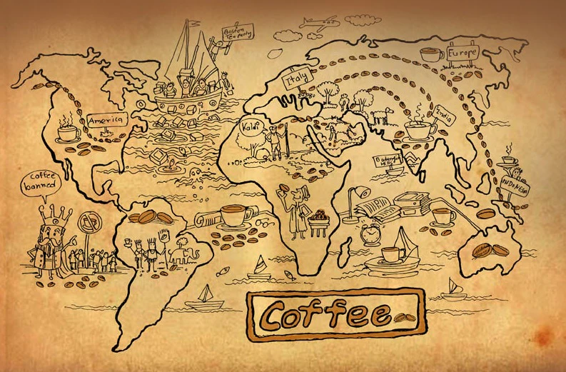
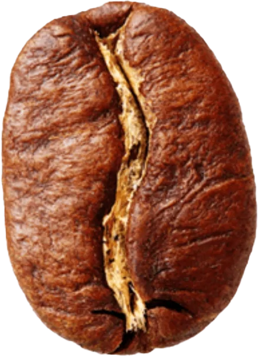
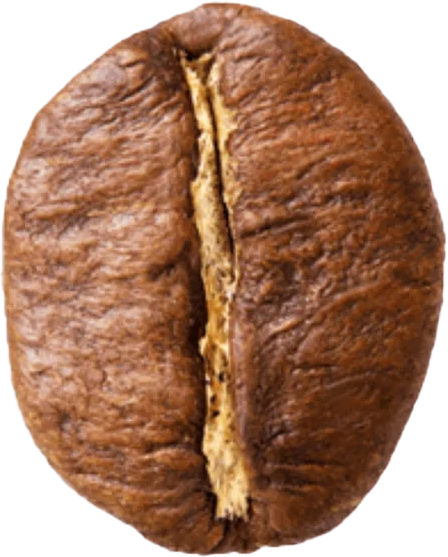
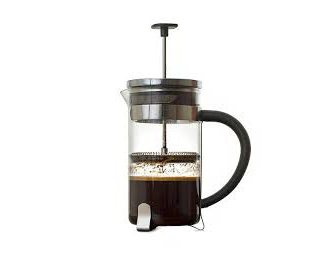
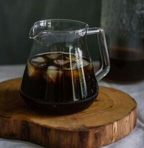
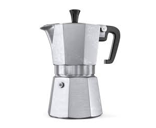

About Coffee
Coffee has been part of human culture for centuries. From small village cafés to modern coffee shops in big cities, coffee connects people all around the world. On this page, you will learn where coffee comes from, how it is made, and why it is so loved.
Types of Coffee
There are many different types of coffee drinks, each with its own taste, strength, and preparation method. Click on any coffee type to learn more:
Espresso

Espresso is the foundation of most coffee drinks. It is made by forcing hot water under high pressure through finely ground coffee beans. The result is a small, concentrated shot of coffee with a thick golden crema on top.
Because of its strong flavor and rich aroma, espresso is loved by people who enjoy bold and intense coffee experiences. It also serves as the base for drinks like cappuccino, latte, macchiato, and mocha.
Latte

Latte is one of the most popular coffee drinks in the world. It is made with one shot of espresso and a large amount of steamed milk, topped with a thin layer of foam.
The milk softens the strong taste of espresso, making the latte smooth, creamy, and easy to drink. Many people enjoy adding flavors such as vanilla, caramel, or hazelnut to their latte.
Cappuccino

Cappuccino is a classic Italian coffee made with equal parts espresso, steamed milk, and milk foam. It has a rich flavor with a light and airy texture on top.
It is often served with cocoa powder or cinnamon sprinkled over the foam. Cappuccino is usually enjoyed in the morning and is less commonly ordered after meals in Italy.
Cold Brew

Cold brew is made by soaking coffee grounds in cold water for 12 to 24 hours. Unlike iced coffee, it is never brewed with hot water.
This slow brewing process creates a smooth, less acidic coffee with a naturally sweet taste. Cold brew is refreshing and is especially popular during warm weather.
Americano

Americano is made by adding hot water to a shot of espresso. This creates a coffee similar in strength to drip coffee but with the rich flavor of espresso.
It is believed that the Americano became popular during World War II when American soldiers diluted espresso to match the coffee they were used to drinking.
Flat White

Flat White is a milk-based coffee that originated in Australia and New Zealand. It is made with espresso and finely textured steamed milk.
Compared to a latte, a flat white has less foam and a stronger coffee taste, making it perfect for those who like creamy coffee without too much milk.
Mocha

Mocha is a delicious combination of espresso, chocolate syrup, and steamed milk. It blends the rich taste of coffee with the sweetness of chocolate.
It is perfect for people who enjoy dessert-style coffee drinks and is often topped with whipped cream or chocolate shavings.
Macchiato

Macchiato means "stained" in Italian. It is made by adding a small amount of milk foam to a shot of espresso.
This drink keeps the strong espresso flavor while slightly softening it with milk. It is ideal for people who enjoy bold coffee with just a touch of creaminess.
Irish Coffee

Irish coffee is a warm cocktail made with hot coffee, Irish whiskey, and sugar, topped with thick cream.
It is often enjoyed as an after-dinner drink and is popular in cold weather because it combines warmth, sweetness, and strong coffee flavor.
Affogato

Affogato is a dessert made with vanilla ice cream "drowned" in a shot of hot espresso. It combines hot and cold in one cup.
The bitterness of espresso melts the sweet ice cream, creating a delicious balance between coffee and dessert.
Turkish Coffee

Turkish coffee is made with very finely ground coffee beans that are brewed unfiltered in a special pot called a cezve.
It is served with foam on top and thick coffee grounds at the bottom of the cup. Turkish coffee is known for its strong taste and cultural importance.
Ristretto

Ristretto is a shorter and more concentrated version of espresso. It uses less water but the same amount of coffee.
This makes it richer, bolder, and more intense than a regular espresso shot. It is perfect for true coffee enthusiasts.
History of Coffee
According to legend, coffee was discovered in Ethiopia when a goat herder noticed that his goats became very energetic after eating coffee berries.
Coffee later spread to the Middle East, then to Europe in the 17th century. At first, many people were unsure about coffee, but it quickly became popular. Today, coffee is one of the most widely consumed drinks in the world.
Early Trade in the Middle East
Coffee has a long and fascinating journey that goes far beyond its legend of discovery. By the 15th century, coffee was being grown and traded in the Arabian Peninsula, especially in Yemen. From there, it spread to Egypt, Persia, and the Ottoman Empire, where coffee houses became important social meeting places.
Coffee Arrives in Europe
In the 17th century, coffee arrived in Europe and quickly gained popularity. Although some people were suspicious of the new drink at first, it soon became fashionable in cities such as London, Paris, and Vienna. Coffee houses were often called “penny universities” because people could exchange news, ideas, and opinions over a cup of coffee.
Coffee Goes Global
As European countries began to establish colonies, coffee plants were taken to new regions. Today, coffee is grown in more than 70 countries around the world, mainly in tropical areas. It has become one of the most important global products and a daily habit for millions of people.
Coffee Beans: Arabica vs. Robusta
Coffee beans come mainly from two types of plants: Arabica and Robusta. These two beans have very different tastes and characteristics.
-

Arabica:
Has a smooth, slightly sweet taste with fruity or floral notes. It contains less caffeine and is considered higher quality.
-

Robusta:
Has a stronger, more bitter taste with earthy notes. It contains more caffeine and is often used in espresso blends.
Brewing Methods
The way coffee is brewed has a big influence on its taste and strength. Different brewing methods bring out different flavors.
-

Espresso Machine
Uses pressure to extract strong coffee. -

French Press
Coffee grounds are steeped in hot water and pressed. -

Pour Over
Hot water is slowly poured over coffee grounds. -

Cold Brew
Coffee is brewed with cold water for many hours. -

Moka Pot
Brews coffee on a stovetop using steam pressure.
Health Benefits of Coffee
When consumed in moderation, coffee can have several health benefits. It is rich in antioxidants and can improve both physical and mental performance.
- Improves focus and alertness
- Boosts energy levels
- Supports metabolism
- May reduce the risk of certain diseases
However, too much coffee can cause nervousness and sleep problems, so it is important to drink it responsibly.

Coffee Around the World
Different countries enjoy coffee in different ways. Each culture has created its own unique coffee traditions.
-
Italy
Famous for espresso and cappuccino. -
Turkey
Known for strong, unfiltered Turkish coffee. -
Brazil
One of the largest coffee producers in the world. -
Ethiopia
The birthplace of coffee. -
USA
Popular for drip coffee and large coffee portions.